한세흔
SEHEUN HAN
×
<
>
5 PATTERN POSTERS
VD2
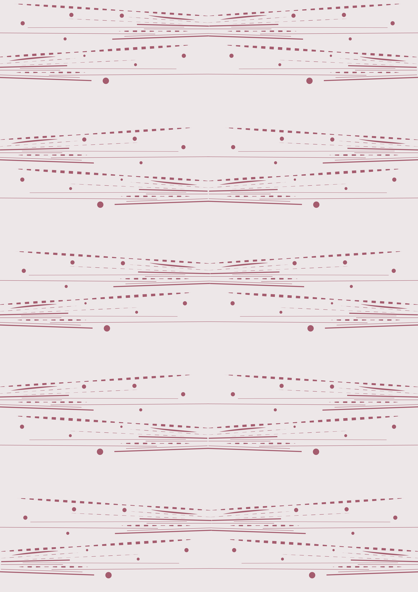
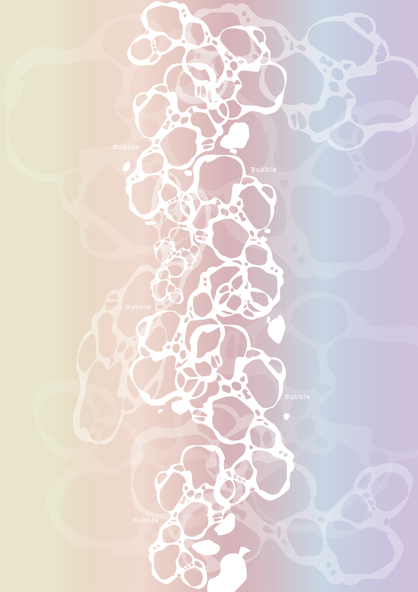
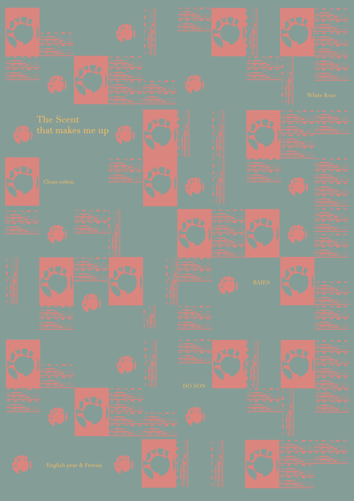
향기에 관심이 많다. 향기에도 저마다의 아이덴티티가 있다고 생각했고, 향기를 내는 모습들을 시각화하였다.
EXHIBITION IDENTITY
VD2
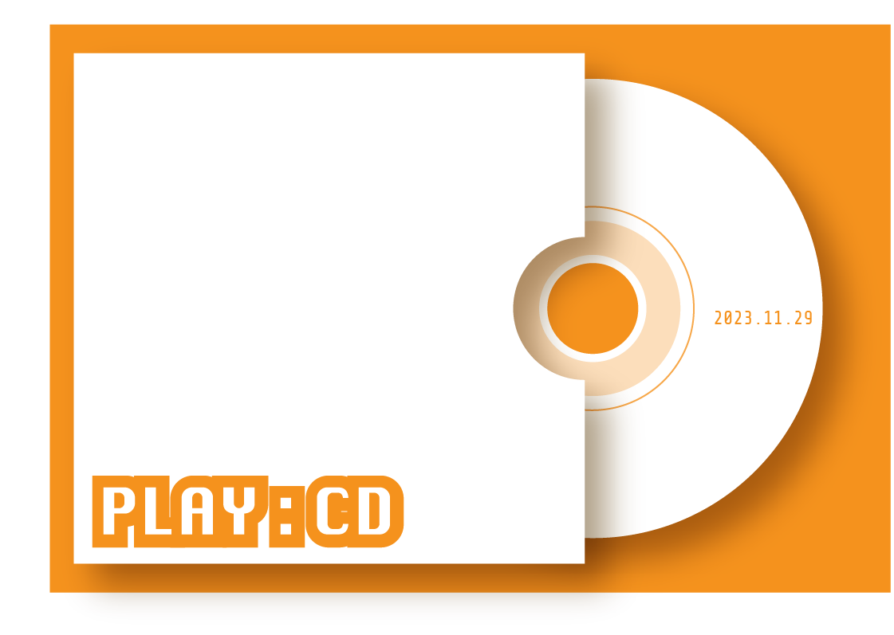 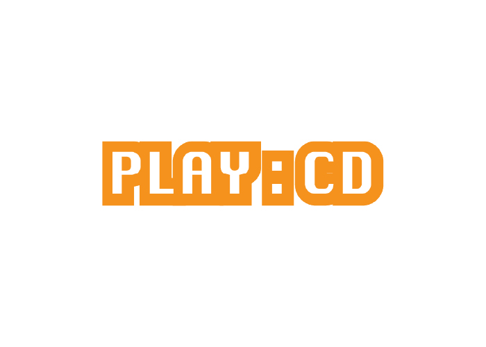
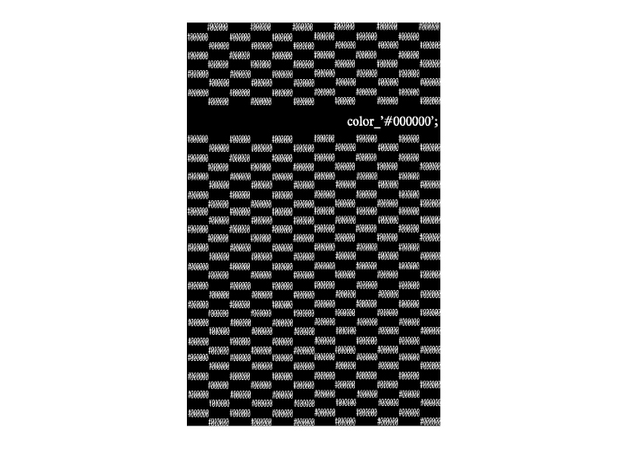 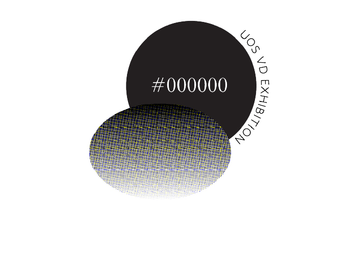
#000000은 검정색을 이용해 그래픽적인 느낌을 표현하였고, CD:PLAY는 CD를 이용하여 제작하였다.
SELF IDENTITY
VD2
이 위치로 직접 가서 확인해보세요!
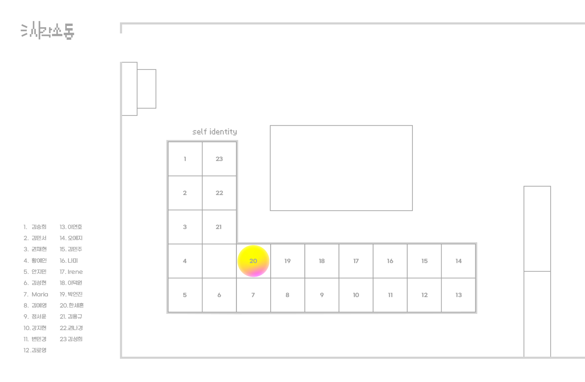
 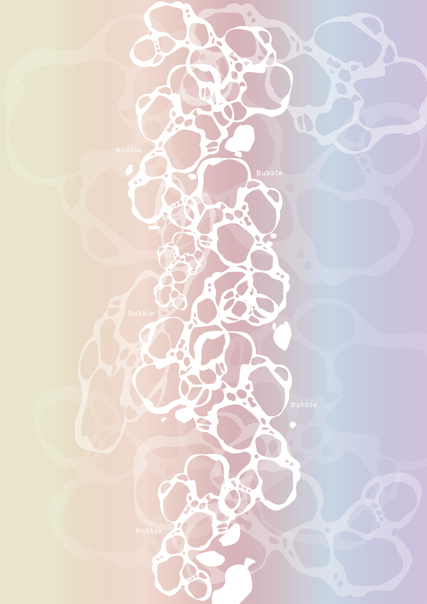
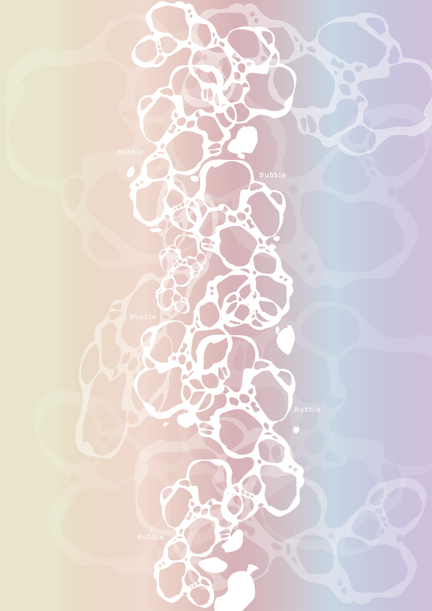
 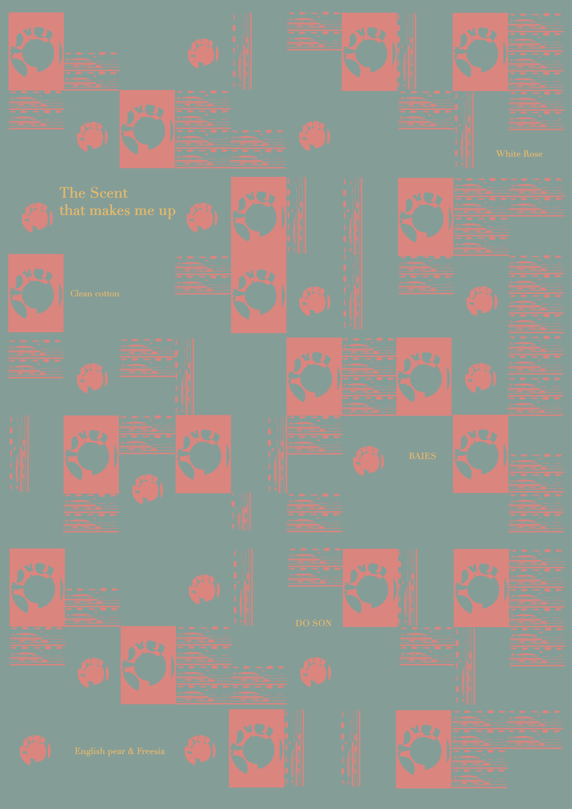
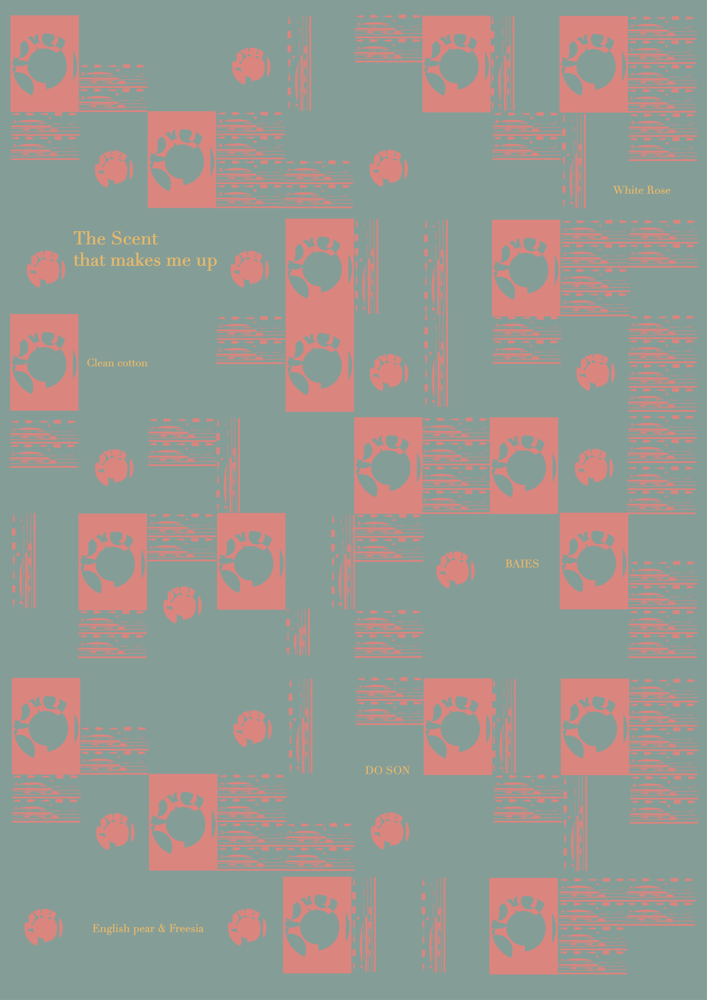
 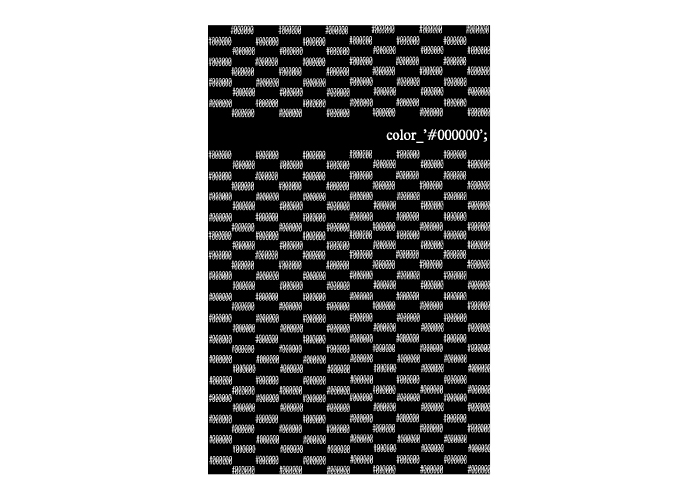
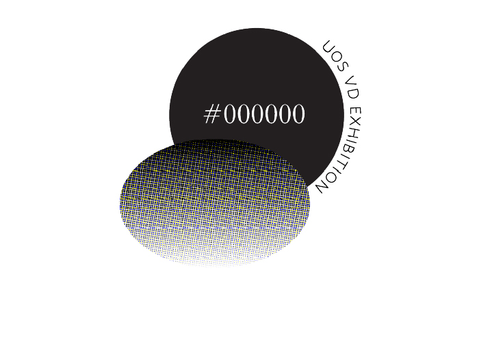
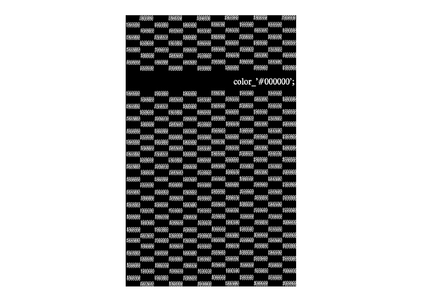
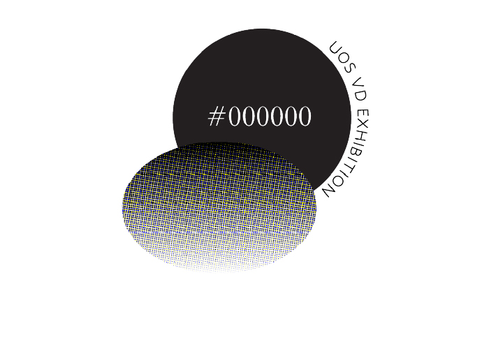